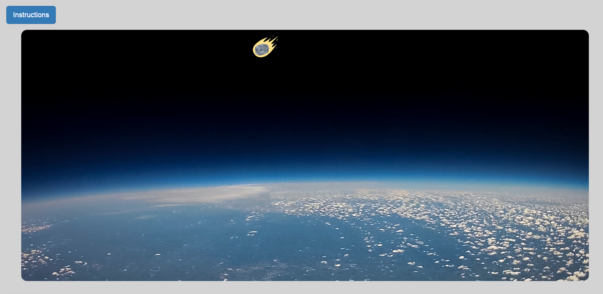
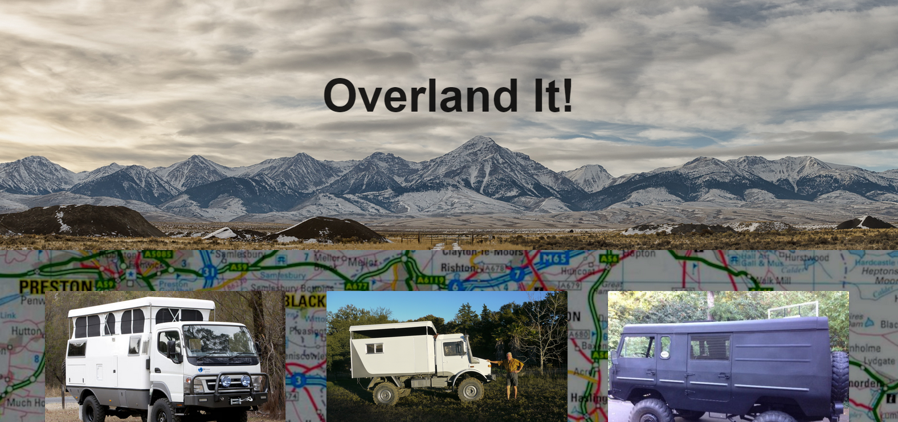
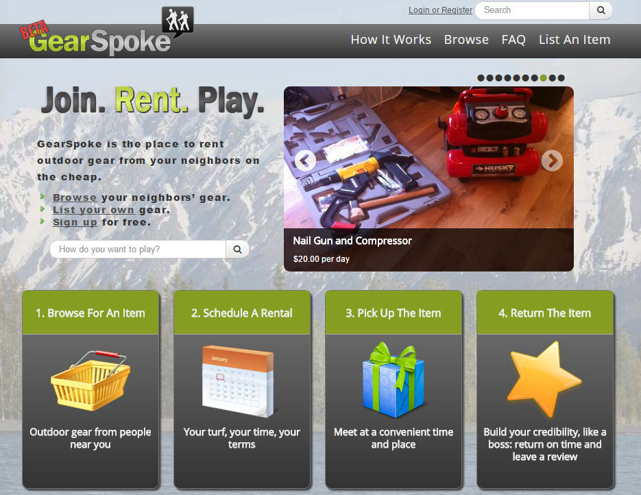

About

With a passion for building web apps using the most simple, short and clear code solutions, Paul intends to gain experience with Angular.js and other technologies to become a top teir developer. Paul looks forward to merging hist interests in travel, outdoor recreation and new technologies with web based solutions at every chance he can.
Skills

| Front End | Back End | Full Stack |
|---|---|---|
| HTML5 - CSS | Node.js | Git | JavaScript | Ruby | TDD |
| Bootstrap | Express.js | Pair Programming | Angular.js | Rails | Team Development |
| JQuery | Sails | Heroku |
| AJAX | MongoDB | Mobile First Design |
| Material | PostgreS | BCRYPT |
| UX | Sequelize | Writing |
Projects
Asteroids!
Inspired by childhood memories of the origional arcade asteroids game. This front end only site features very simple and clean code to make a little, two player game. Click the asteroid and keep it from destroying the planet!
 There is no one place on the internet that features a plurality of expedition vehicles for sale. Overland It aggrigates expedition vehicles for sale from a variety of sites and hosts them on a mongoDB database using Node.js and Express.js as the app backend. Angular-Material is used as the front end library. The origional concept was to data scrape expedition vehicles from a few sources and aggrigate them on the site. However, the problem was a bit too big for the solution. There were no sites with more than two expedition vehicles on them so the data was manually added to the database.
GearSpoke
GearSpoke is a site where users can rent their outdoor gear to fellow users. There's no fee to sign up, you can pay the rental fee securly through the site and it only costs 10% of the rental to rent your equipment over the site.
As co-founder | CEO of GearSpoke, Paul learned while doing and was a major part in the development the site and it's community. With three technical developers and one designer, Paul created an easy to use, beautiful site while gaining the respect of his co-founders an mentors. After selling in 2014, Paul was determined to become an expert developer.